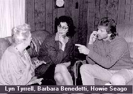
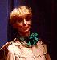

Escape From Seattle | Kill Roy | Doctor Who | Star Trek: The Pepsi Generation
What's Ryan Watching | The Wolfe Project | Mystery Science Theater 3000
Have I Got News For You
The Wolfe Project was conceived by T. Brian Wagner as an investigation into psychic phenomena. He envisioned the series to be like a documentary record, shot in real-time, and presented as "fact." Realism was to be the key at all times, not only in the subject matter, but in the way the show was presented. T originally pitched the series to me years earlier while we were still doing the Doctor Who movies with Barbara Benedetti, and in fact it was always his intention to cast Barbara in the title part. Several years later I took him up on it, although he was reluctant to proceed at first. However I promised him we would get a director and cast he approved of. T originally wanted to play the part of the deaf psychic Simon, although he capitulated when I hired someone even he had to admit was more qualified: deaf actor Howie Seago, who had appeared numerous times on television including a memorable part in the Star Trek: The Next Generation episode, "Loud as a Whisper." It turned out (fortunately for us) that Howie lived in the Seattle area and wasn't above taking a lot less than his usual fee in order to appear in our no-frills production.
I hadn't seen Barbara for years when I called her up and asked her to play Mrs. Wolfe. She agreed (especially since we could actually pay her this time -- unlike all the Doctor Who movies), but told me she had changed her "look" a bit since her days of playing a punk-rock housewife in Angry Housewives in the 1980s. After scouring the earth for a director (Steve Hauge, my director on the Doctor Who movie "Broken Doors" and T's first choice, wasn't available), we picked Tim Young, who happened to be T's roommate at the time. Tim arranged for us to use the theater at Shoreline Community College in order to rehearse (later we used the upstairs office at the print shop I worked at). When Barbara walked in we barely recognized her.

Instead of blonde hair she was her natural brunette, and she had drabbed up her wardrobe in order to better play the character. Wow. I figured no one would probably recognize her from the Doctor Who movies (which is probably just as well, typecasting being what it is).The hardest parts to cast were the retired couple whose case Mrs. Wolfe and company would be investigating in this first episode. Barbara recommended Lyn Tyrrell, a local actress, but I was stumped for what to do about Mr. Greenbaum. As it happened, Tim and I were working on a movie on Whidbey Island called Lemmings, and realized that the fellow playing the Merlin-like character, Dick Morgan, would be perfect for the part. Dick's career went way back, having been one of the original Little Rascals! Talk about experience. He was a class act all the way and in the movie you'd think that he and Lyn had been married and together for years.
We wanted to film in a mobile home somewhere but nobody we knew had one. Finally Tim struck up a friendship with a waitress at his local Denney's, and we were able to make a deal to use her home for the four days required for the shoot. She was even cool about letting us fill her place up with cats.
Ah yes, the cats. T's script called for the Greenbaums to be haunted by the spirit of their dead cat (or so they thought), with one scene requiring a bathroom to be filled with as many cats as possible at one point. The problem: where to find all the cats. It would be no good asking every cat owner I knew to bring their cats over, as they would inevitably start fighting with each other (the cats, that is). We needed to find the proverbial "little old lady with 60 cats" who would let us borrow a few of her feline friends. Sadly, these little old ladies seem in short supply these days. Eventually, we located someone who owned six cats and was willing to loan them to us. We set up the scene and then dispatched our "cat wrangler," Linda Shapley, to fetch the cats so they wouldn't have to be in the house any longer than necessary. Needless to say, the cats proved trying, but in the end we were able to get the shot.
Another complication was that Barbara's character would be required to use sign language in order to communicate with the deaf Simon. Now sign language isn't something you just pick up in a couple of minutes, especially with the complicated phrases she would be required to do. Not to mention that unlike a normal movie that might be shot in little bits and pieces and thus allow for a bit of "cheating," we would be doing long five minute takes that would have to be executed flawlessly. Many long hours were spent in order to get them right.
Special effects done as we shot included making a cat disappear right in front of a character's eyes, and having a toy mouse suddenly begin moving on its own. We were especially pleased with the latter effect as the mouse in question was first handled by a character and clearly shown not to have any strings attached. (Sorry, I'm not going to tell how we did it -- work it out for yourself.)
Because the movie was filmed in large master takes, editing was a fairly simple affair. What wasn't so easy was the elaborate sound editing required to add the voice of a child over Simon's voice during a seance, and other technical fixes. The day that Tim and I booked the editing space at American Motion Picture was the same day the Gulf War started. Here we were, knee deep in editing until 3 in the morning, while the rest of the world was glued to CNN watching Baghdad get bombed. It was a surreal experience to say the least.
The movie was premiered at Rustycon that year and has since been seen by practically nobody! Maybe it was toooriginal. Or maybe we had the thunder stolen from us by The X-Files, which deals with some of the same subject manner but in a dynamically more entertaining way. Ah well. Everyone who worked on The Wolfe Project is proud of their work, although sadly there will never be another one (see below).
The Wolfe Project: The Cat Came Back
30 minutes. Hi-8mm videotape. Filmed September 1990, released
January 1991.
Cast. . . Barbara Benedetti as Mrs. Wolfe, Howie Seago as
Simon, Ken Church as Chuck, Lyn Tyrrell as Flora, Dick Morgan as
Larry.
Written by T. Brian Wagner. Produced by Ryan K. Johnson. Directed
by Timothy M. Young.

Barbara Benedetti passed away from cancer in November 1991. She was 38 years old. At her memorial service, the many actors she had appeared with over the years gathered to sing her praises and remember her. It's a shame that most of her work was spent on the stage where it can't be shared with other people after the fact. Her only film work aside from my movies (as far as I'm aware) was a small part in an awful movie called Bomb's Away, which coincidentally co-starred Michael Santo (Star Trek: The Pepsi Generation). Back to Ryan's Homepage
Back to Ryan's Homepage
Escape From Seattle | Kill Roy | Doctor
Who | Star Trek: The Pepsi Generation
What's Ryan Watching | The Wolfe
Project | Mystery Science Theater 3000
Have I Got News For You